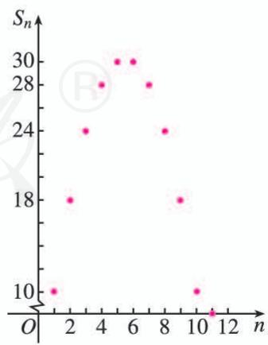
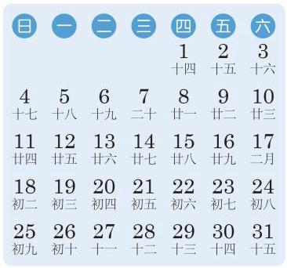
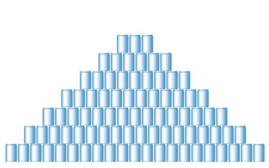
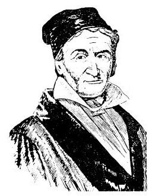
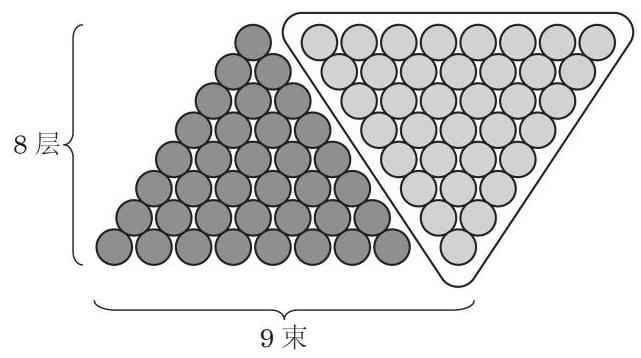

等差数列前n项和｜双教材原文摘录
本文件保留相关章节的讲解、例题与随堂练习，按版本分段。较宽章节含相邻知识和混合习题，尚未逐题筛选、配答或审校。原文为转写稿，请对照教材原件。
人教A版：4.2.2
等差数列的前n项和公式
来源：01_第四章_数列.md（本地转写稿），转写稿第
748—1139 行；截至下一指定标题前。
4.2.2 等差数列的前n项和公式
前面我们学习了等差数列的概念和通项公式，下面我们将利用这些知识解决等差数列的求和问题
据说，二百多年前，高斯的算术老师提出了下面的问题：
当其他同学忙于把100个数逐项相加时，10岁的高斯却用下面的方法迅速算出了正确答案：
高斯的算法实际上解决了求等差数列
前100项的和的问题.
高斯(Gauss,1777—1855)，德国数学家，近代数学的奠基者之一.他在天文学、大地测量学、磁学、光学等领域都作出了杰出贡献.
思考
你能说说高斯在求和过程中利用了数列①的什么性质吗？你能从中得到求数列①的前
n 项和的方法吗？
对于数列①，设
，那么高斯的计算方法可以表示为
可以发现，高斯在计算中利用了
这一特殊关系，这就是上一小节例5中性质的应用，它使不同数的求和问题转化成了相同数（即101）的求和，从而简化了运算。
你能用高斯的方法求1+2+…+100+101吗?
将上述方法推广到一般，可以得到：
当n是偶数时，有
于是有
当n为奇数时，有
所以，对任意正整数n，都有
思考
我们发现，在求前n个正整数的和时，要对n分奇数、偶数进行讨论，比较麻烦．
能否设法避免分类讨论？
如果对公式
作变形，可得
它相当于两个
相加，而结果变成n个（n+1）相加.
受此启发，我们得到下面的方法：
将上述两式相加，可得
所以
探究
上述方法的妙处在哪里？这种方法能够推广到求等差数列
的前 n 项和吗？
可以发现，上述方法的妙处在于将
“倒序”为
，再将两式相加，得到n个相同的数（即n+1）相加，从而把不同数的求和转化为n个相同的数求和.
对于等差数列
，因为
，由上述方法得到启示，我们用两种方式表示
②+③，得
由此得到等差数列
的前n项和公式
将（1）变形可得
所以
就是等差数列
前n项的平均数.
实际上，我们就是利用等差数列的这一重要特性来推导它的前n项和的.
你还能发现这一特性的一些应用吗？
对于等差数列
，利用公式（1），只要已知等差数列
的首项
和末项
，就可以求得前n项和
.另外，如果已知首项
和公差
，那么这个等差数列就完全确定了，所以我们也可以用
和
来表示
.
把等差数列的通项公式
代入公式(1)，可得
思考
不从公式（1）出发，你能用其他方法得到公式（2）吗？
例6 已知数列
是等差数列.
若
，求
若
，求
若
，求n.
对于等差数列
的相关量
，，，，，已知几个量就可以确定其他量？
分析：对于（1），可以直接利用公式
求和；在（2）中，可以先利用
和
的值求出d，再利用公式
求和；（3）已知公式
中的
和
，解方程即可求得n.
解：（1）因为
，根据公式
，可得
- 因为
，所以
。根据公式
，可得
(3)把
代入
，得
整理，得
解得
n=12，或n=-5（舍去）.
所以
例7 已知一个等差数列
前10项的和是310，前20项的和是1220.由这些条件能确定这个等差数列的首项和公差吗？
分析：把已知条件代入等差数列前n项和的公式（2）后，可得到两个关于
与 d的二元一次方程.解这两个二元一次方程所组成的方程组，就可以求得
和
解：由题意，知
把它们代入公式
得
解方程组，得
所以，由所给的条件可以确定等差数列的首项和公差.
一般地，对于等差数列，只要给定两个相互独立的条件，这个数列就完全确定.
探究
已知数列
的前n 项和为
，其中p，q，r为常数，且
任取若干组p，q，r，在电子表格中计算
的值（图 4.2-3 给出p=1，q=2，r=0的情况），观察数列
的特点，研究它是一个怎样的数列，并证明你的结论.
|
|
A
|
B
|
C
|
D
|
|
1
|
1
|
3
|
3
|
|
|
2
|
2
|
8
|
5
|
|
|
3
|
0
|
15
|
7
|
|
|
4
|
|
24
|
9
|
|
5
|
|
35
|
11
|
|
图4.2-3
图 4.2-3中的电子表格 A列中
A1，A2，A3分别表示p，q，r的值，B列、C列中分别是相应的
和
的值.
练习
- 根据下列各题中的条件，求相应等差数列
的前n项和
(2)
(4)
等差数列—1，-3，-5，…的前多少项的和是—100?
在等差数列
中，
为其前n项的和，若
，求
在等差数列
中，若
，求k.
5.已知一个等差数列的项数为奇数，其中所有奇数项的和为290，所有偶数项的和为261.求此数列中间一项的值以及项数
例8某校新建一个报告厅，要求容纳800个座位，报告厅共有20排座位，从第2排起后一排都比前一排多2个座位.问第1排应安排多少个座位.
分析：将第1排到第20排的座位数依次排成一列，构成数列
.设数列
的前n项和为
.由题意可知，
是等差数列，且公差及前20项的和已知，所以可利用等差数列的前n项和公式求首项.
解：设报告厅的座位从第1排到第20排，各排的座位数依次排成一列，构成数列
，其前n项和为
．根据题意，数列
是一个公差为2的等差数列，且
由
，可得
因此，第1排应安排21个座位.
例9已知等差数列
的前n项和为
，若
，公差
，则
是否存在最大值？若存在，求
的最大值及取得最大值时n的值；若不存在，请说明理由.
分析：由
和
，可以证明
是递减数列，且存在正整数k，使得当
时，
递减.这样，就把求
的最大值转化为求
的所有正数项的和.
另一方面，等差数列的前
项和公式可写成
，所以当
时，
可以看成二次函数
当
时的函数值。如图4.2-4，当
时，
关于
的图象是一条开口向下的抛物线上的一些点。因此，可以利用二次函数求相应的
，
的值。

解法1：由
，得
，所以
是递减数列.
又由
，可知：
图4.2-4
当
时，
当
时，
当
时，
所以
也就是说，当n=5或6时，
最大.
因为
，所以
的最大值为30.
解法2：因为
想一想，这是为什么？
所以，当n取与
最接近的整数即5或6时，
最大，最大值为30.
思考
在例 9 中，当d=—3.5 时，
有最大值吗？结合例9考虑更一般的等差数列前n 项和的最大值问题.
练习
1.某市一家商场的新年最高促销奖设立了两种领奖方式：第一种，获奖者可以选择2000元的奖金；第二种，从12月20日到第二年的1月1日，每天到该商场领取奖品，第1天领取的奖品价值为100元，第2天为110元，以后逐天增加10元.你认为哪种领奖方式获奖者受益更多？
- 已知数列
的前n项和
求这个数列的通项公式
3.已知等差数列—4.2，-3.7，—3.2，…的前n项和为
是否存在最大（小）值？如果存在，求出取得最值时n的值.
- 求集合
中元素的个数，并求这些元素的和.
*5.已知数列
的通项公式为
，前n项和为
求
取得最小值时n的值.
习题4.2
复习巩固
- 根据下列等差数列
中的已知量，求相应的未知量：
，求d及n; (2)
，求
及
，求n及
(4)
，求
及
已知
为等差数列，
求
（1）求从小到大排列的前n个正偶数的和
(2)求从小到大排列的前n个正奇数的和.
(3)在三位正整数的集合中有多少个数是5的倍数？求这些数的和.
(4)在小于100的正整数中，有多少个数被7除余2?这些数的和是多少?
4.1682年，英国天文学家哈雷发现一颗大彗星的运行曲线和1531年、1607年的彗星惊人地相似.他大胆断定，这是同一天体的三次出现，并预言它将于76年后再度回归这就是著名的哈雷彗星，它的回归周期大约是76年。请你查找资料，列出哈雷彗星的回归时间表，并预测它在本世纪回归的年份.
综合运用
5.已知一个多边形的周长等于158cm，所有各边的长成等差数列，最大的边长为44cm，公差为3
cm. 求这个多边形的边数.
数列
都是等差数列，且
求数列
的前 100项的和.
已知
是等差数列
的前 n项和.
证明
是等差数列；
设
为数列
的前n项和，若
，求
。
8.已知两个等差数列2，6，10，…，190及2，8，14，…，200，将这两个等差数列的公共项按从小到大的顺序组成一个新数列.求这个新数列的各项之和.
- 一支车队有15辆车，某天下午依次出发执行运输任务.第一辆车于14时出发，以后每间隔10min发出一辆车.假设所有的司机都连续开车，并都在18时停下来休息.
(1)截止到18时，最后一辆车行驶了多长时间?
(2)如果每辆车行驶的速度都是60km/h，这个车队当天一共行驶了多少千米?
拓广探索
10.已知等差数列
的公差为d，求证
。你能从直线的斜率角度来解释这个结果吗？
11.虎甲虫以爬行速度快闻名，下表记录了一只虎甲虫连续爬行
（）时爬行的距离.
|
时间/s
|
1
|
2
|
3
|
4
|
5
|
6
|
7
|
8
|
9
|
10
|
|
距离/m
|
2.50
|
5.03
|
7.55
|
10.05
|
12.45
|
15.01
|
17.28
|
19.90
|
22.48
|
25.07
|
(1）你能建立一个数列模型，近似地表示这只虎甲虫连续爬行的距离与时间之间的关系吗？
(2)利用建立的模型计算，这只虎甲虫连续爬行1min能爬多远（精确到0.01m)?它连续爬行10
m需要多长时间（精确到0.1s)？
12.如图的形状出现在南宋数学家杨辉所著的《详解九章算法·商功》中，后人称为“三角垛”.“三角垛”的最上层有1个球，第二层有3个球，第三层有6个球…设各层球数构成一个数列
- 写出数列
的一个递推公式；
*(2）根据（1）中的递推公式，写出数列
的一个通项公式.
(第12 题)
沪教版2026：4.1 等差数列
来源：沪教版选择性必修第一册2026-dollar-polished-fixed.md（本地转写稿），转写稿第
5044—5490 行；截至下一指定标题前。
4.1 等差数列
1 等差数列及其通项公式
在现实生活中, 我们经常见到按一定顺序排列起来的一列数, 称之为数列.
我们将数列中的每一个数叫做这个数列的项. 排在第一位的数称为这个数列的第 1
项 (通常叫做首项), 排在第二位的数称为这个数列的第 2 项,
,排在第
位的数称为这个数列的第
项,等等.
数列的一般形式可以记成
其中
是数列的第
项,下标
是
的序数. 上面的数列常简记为
.
观察以下数列, 看它们有什么共同的特点.
(1)月历(图 4-1-1)最后一列数依次为:
3, 10, 17, 24, 31.①

bo_d7fqvdc91nqc7381i9u0_138_560_1445_366_342_0.jpg
图 4-1-1

bo_d7fqvdc91nqc7381i9u0_138_960_1459_525_328_0.jpg
图 4-1-2
(2)按一定规律堆放在一起的食品罐头(图 4-1-2)，共堆放 7 层,
从下到上各层的罐头数依次为:
②
(3)全国统一的鞋号中，常见的成年女鞋的尺寸(单位:cm)
由小至大依次为:
③
可以看到, 对于数列①, 从第 2 项起, 每一项与其前一项的差都等于 7;
对于数列②, 从第 2 项起, 每一项与其前一项的差都等于 -3 ; 对于数列③，从第
2 项起，每一项与其前一项的差都等于 0.5 .
这些数列有一个共同特点: 从第 2 项起,
每一项与其前一项的差都等于同一个常数.
定义 如果一个数列从第 2 项起, 每一项与其前一项的差都等于同一个常数,
这个数列就叫做等差数列 (arithmetic sequence),
而这个常数叫做等差数列的公差 (common difference). 公差通常用小写字母
表示.
给定一个数列
. 若
是等差数列,由定义可得
,从而
. 反之,若
,则
,即
,从而
成等差数列.
这时,
叫做
与
的等差中项.
如果等差数列
的首项为
,公差为
,由定义可得
从而
…
把这
个等式相加得
由此
当
时,容易验证上面的等式也成立. 因此,当
为正整数时,等差数列
的第
项可以用如下公式表示:
像这种用数列的序数
表示相应项
的公式称为数列
的通项公式. 而上式就是等差数列
的通项公式.
由三个数组成的等差数列可以看成最简单的等差数列.
例 1 已知等差数列
.
(1)求该等差数列的第 20 项；
(2)一401 是不是该等差数列的项？如果是，指明是第几项;
如果不是,请说明理由.
解 设该等差数列为
,由
,得该等差数列的公差
. 由等差数列的通项公式,得
(1)由上述通项公式可得, 该等差数列的第 20 项为
(2)假设 -401 是这个等差数列中的第
项，则有
解得
所以, -401 是这个等差数列的第 100 项.
例 2 假设体育场一角看台的座位从第 2
排起每一排都比前一排多相等数目的座位. 若第 3 排有 10 个座位, 第 9 排有
28 个座位, 则第 12 排有多少个座位?
解 由题意可知,体育场该角看台每排的座位数成等差数列,设该数列为
,其公差为
,则
. 由等差数列的通项公式, 得
解得
所以,
.
答: 体育场该角看台的第 12 排有 37 个座位.
例 3 已知
是数列
的通项公式,其中
和
均为常数. 试判断数列
是否为等差数列,并证明你的结论.
分析 为了判断
是否为等差数列,可以利用等差数列的定义,只要判断
的值是否为一个与
无关的常数即可.
解 任取数列
中的相邻两项
与
,求差得
因为
是一个与
无关的常数,所以
是一个等差数列.
练习 4.1(1)
- 下列数列中成等差数列的是 ( )
A.0,1,3,5,7;
B.
;
C.
;
D.
.
- 设数列
为等差数列,其公差为
.
(1)已知
，求
；
(2)已知
，求
；
(3)已知
，求
.
- 已知数列
是等差数列,正整数
满足
. 求证:
2 等差数列的前
项和

bo_d7fqvdc91nqc7381i9u0_141_1173_1311_256_329_0.jpg
高斯 (C. F. Gauss, 1777—1855) 德国数学家.
研究的内容涉及数学的诸多领域, 并对天文学和大地测量学的研究有突出贡献.
他在世界上享有崇高的声望，被誉为 “数学王子”.
据说 200 多年前,
著名数学家高斯的算术老师在课堂上曾经提出了下面的问题:
求
的值.
少年高斯用下面的方法迅速算出了正确的答案:
上述两式相加得:
?
所以，结果为
.
高斯的计算方法实际上解决了求等差数列
,
前 100 项和的问题.
事实上, 古代的中国人和希腊人也是这么求等差数列之和的. 例如,
宋朝数学家杨辉提出了一个问题: “今有圭垛草一堆, 顶上一束，底阔八束.
问共几束？答:36 束. ”他的计算方法可以用图 4-1-3 表示.

bo_d7fqvdc91nqc7381i9u0_142_708_245_641_358_0.jpg
图 4-1-3
一般地,将数列
的前
项和记作
,即
根据等差数列的通项公式, 上式可以写为
受高斯算法的启示,我们又可将
表示为
②
由①+②, 得
于是就可得到等差数列
的前
项和公式
由于
,上述公式又可以写作
例 4 设数列
为等差数列,其前
项和为
.
(1)已知
，求
；
(2)已知
，求
；
(3)已知
，求
.
解(1)由等差数列的前
项和公式，得
特别地
(2)设公差为
，则
，于是由等差数列的前
项和公式,有
(3)设公差为
，则
. 从而
例 5 已知等差数列
的前 10 项和
,前 20 项和
,由此可以确定数列
前 30 项和
吗?
解 设该等差数列
的公差为
. 由等差数列的前
项和公式
,可得
解得
所以,
.
例 6 已知数列
的前
项和为
.
(1)求数列
的通项公式；
(2)求证:数列
是等差数列.
解(1)当
时,
从而
而当
时,
亦满足上式.
所以,数列
的通项公式为
.
(2)证明:由(1)中的结果，当
时，
从而
所以，数列
是一个等差数列.
如果一个数列
的前
项和为
其中
均为常数, 这个数列是等差数列吗?
练习 4.1(2)
- 计算
.
- 设数列
为等差数列,其前
项和为
.
(1)已知
,求
;
(2)已知
，求
.
- 已知数列
的前
项和
，求证:数列
是等差数列.
习题 4.1
A 组
- 分别求下列两数的等差中项:
与
；___
与
.
- 设数列
为等差数列,其公差为
.
(1)已知
,求
;
(2)已知
，求
；
(3)已知
，求
；
(4)已知
，求
.
- 已知数列
为等差数列,其公差为
. 求证: 对任意给定的正整数
,都有
- 设数列
为等差数列,其公差为
.
(1)已知
,求
及
;
(2)已知
，求
.
- 设数列
为等差数列,其公差为
,前
项和为
.
(1)已知
,求
及
;
(2)已知
,求
及
;
(3)已知
，求
及
；
(4)已知
，求
及
.
- 设数列
为等差数列,其前
项和为
.
(1)已知
,求
;
(2)已知
，求
.
- 设数列
为等差数列,其前
项和为
.
(1)已知
，求
；
(2)已知
，求
；
(3)已知
，求
；
(4)已知
，求
.
- 求证: “
三个内角的度数可以构成等差数列” 是 “
中有一个内角为
”的充要条件.
9.《九章算术》中的“竹九节”问题: 现有一根 9 节的竹子,
自上而下各节的容积成等差数列. 若最上面 4 节的容积共 3 升, 最下面 3
节的容积共 4 升, 则第 5 节的容积为多少升?
B 组
1.(1)在等差数列
中，等式
是否都成立？
(2)在数列
中，如果对于任意的正整数
，都有
，那么数列
一定是等差数列吗?
- 在等差数列
中,其前
项和为
. 已知公差
.
(1)写出
的具体展开式，并求其值；
(2)用求和符号表示
，并求其值.
- 在等差数列
中,已知
. 求数列
的前
项和
的最小值.
- 已知等差数列
,其前
项和为
. 若存在两个不相等的正整数
和
,满足
,求
.
- 已知一个凸多边形各个内角的度数可以排列成一个公差为 5 的等差数列,
且最小角为
,该多边形是几边形?
- 某产品按质量分成 10 个档次, 生产最低档次产品的利润是 8 元/件.
每提高一个档次, 每件产品的利润增加 2 元, 但产量每天减少 3 件.
如果在某段时间内, 最低档次 (记作第 1 档次) 的产品每天可生产 60 件,
那么在该段时间内, 生产第几档次的产品可获得最大利润?